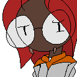
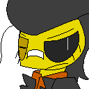
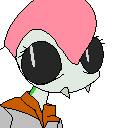
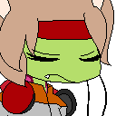

Cocoon Members
| Two-spot | ||
|---|---|---|
| 
Species: Ladybug
Likes: Red velvet cake, acoustic music, graphic novels The main character of the story, as well as the Cocoon Program's newest recruit. An aspiring artist turned soldier after a chance encounter during one of her research walks. Despite being green, she makes up for her weaknesses in spades with an unrivaled intuition. Despite this, her nerves often get the best of her, as well as her lack of confidence and self-esteem. | ||
| Vespari | ||
|---|---|---|
| 
Species: Wasp
Likes: Gummy sour candies, hard rock, decorating her Tender Frame (with flames) The hot-headed lancer, and Two-spot's childhood friend. Though she puts up a front of vanity and arrogance, oftentimes she's actually more tense than Two-spot when out on missions.
It is unknown if she genuinely believes the flames painted on her Tender Frame make it go faster or not. | ||
| Doloma | ||
|---|---|---|
| 
Species: Mantis
Likes: Honey graham gelato, decorating her Tender Frame (with flowers), mysteries A moral compass to the group, often trying to cheer up and motivate those around her. Her elegance and decorum gives her a graceful flow not unlike that of a dancer when in combat. Oftentimes she'll stay up late, completely enamored in stories both fictional and nonfictional. Vespari, her bunkmate, often has to wake her up as a result. | ||
| Casey | ||
|---|---|---|
 Species: Beetle
Species: Beetle
Likes: Caramel-coated cheesecake, maintenance work, romance novels and erotica The mechanic and stalwart tank of the group. Quiet and to-the-point, her lack of conversationality often leads to awkward situations with her peers. Still, one could easily spend hours with her if the topic in question is one in alignment with her many passions. | ||
| Leonte | ||
|---|---|---|
| 
Species: Caterpillar
Likes: Dark chocolate protein bars, EDM/Trance, quiet moments to herself A child soldier, who often keeps to herself rather than spending time amongst her peers. She isn't antisocial by choice-- she just doesn't know how to connect with others. She often spends time with her Tender Frame's AI, known as MORPHO. Her skills as a sniper are unparalleled, shutting out all background noise as she gets into a machine-like autopilot state. | ||